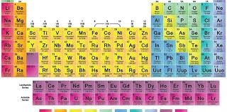

Tabla Periódica
La tabla periódica es un instrumento fundamental para el estudio de los elementos químicos y sus propiedades. Descubre cómo están organizados los elementos y cómo sus características se relacionan con su ubicación en la tabla.
Temas cubiertos:
- Estructura de la tabla periódica: grupos, periodos y bloques.
- Propiedades de los elementos según su posición en la tabla.
- Elementos principales: metales, no metales, y metaloides.